FOSS is the Future
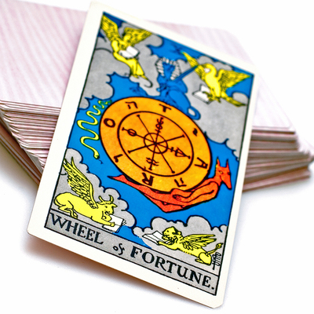
Jadi.net
jadi.net/podcast
jadi.net/videcast
twitter.com/jadi
:)
What is FOSS
- The freedom to run the program as you wish, for any purpose (freedom 0).
- The freedom to study how the program works, and change it so it does your computing as you wish (freedom 1). Access to the source code is a precondition for this.
- The freedom to redistribute copies so you can help your neighbor (freedom 2).
- The freedom to distribute copies of your modified versions to others (freedom 3).
Relax...

Why FOSS
- Security
- Reliability/Stability
- Open standards and vendor independence
Why FOSS
- Reduced reliance on imports
- Developing local software capacity
- Piracy, IPR, and WTO
- Localization
U R Using FOSS

u r USING FOSS

Success Samples

Success Samples
It's more than software
Its a great culture!
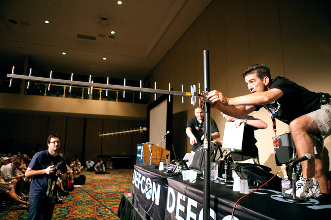
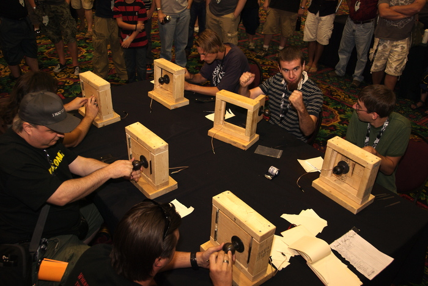
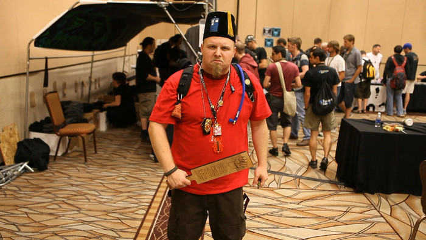
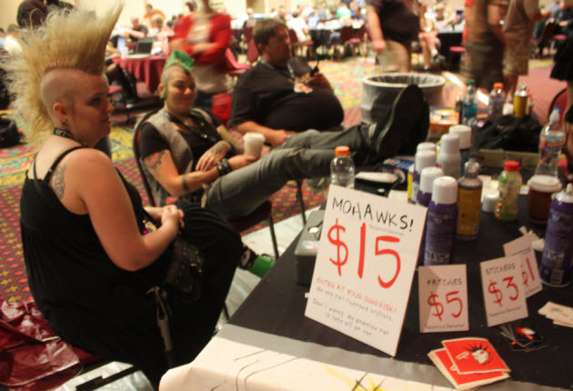
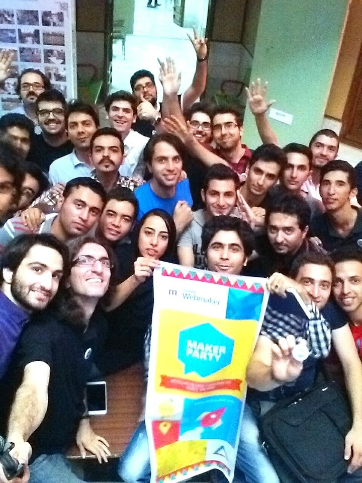
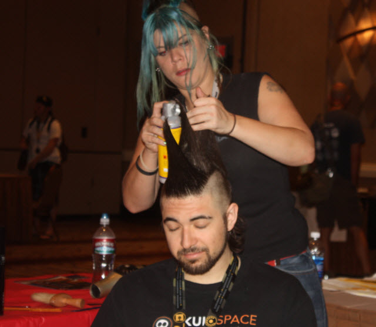
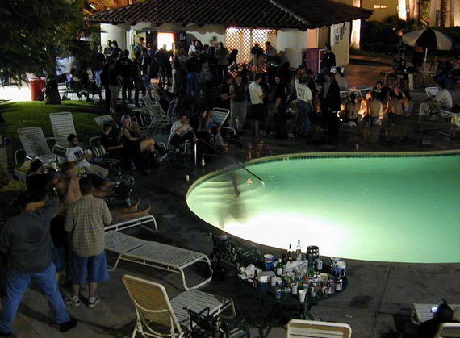
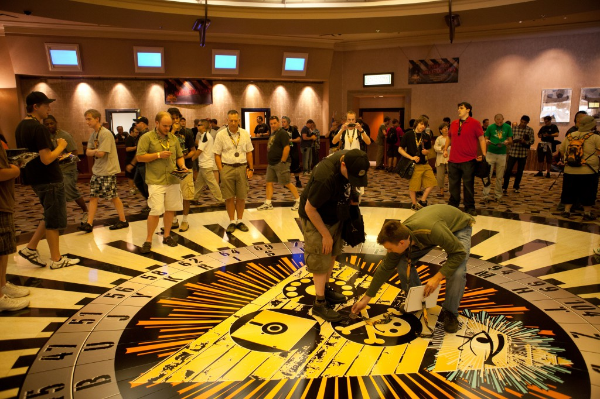
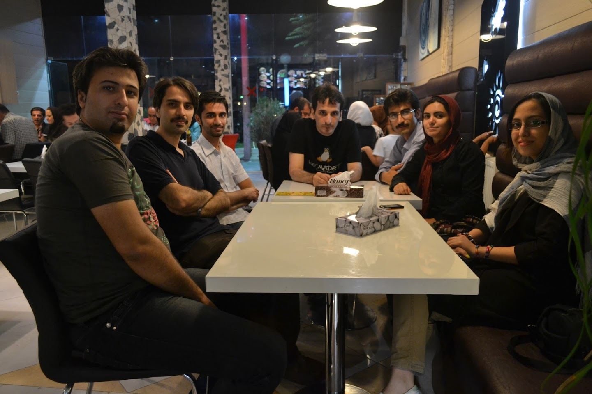
It a way of development

Have a look at Hadoop
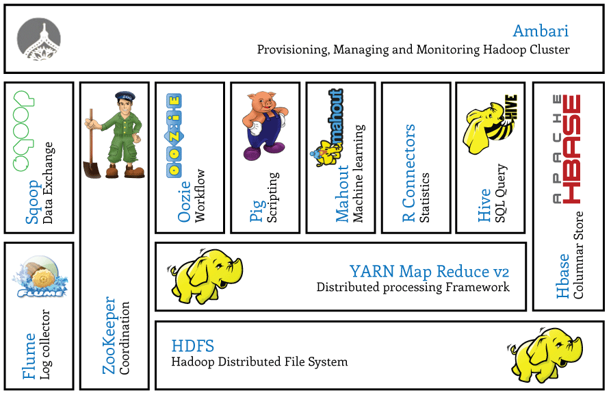
Money? You will have it

Fame? You will have it

Lets go FOSS